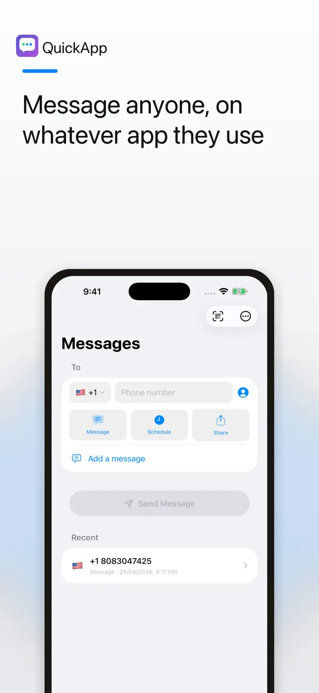
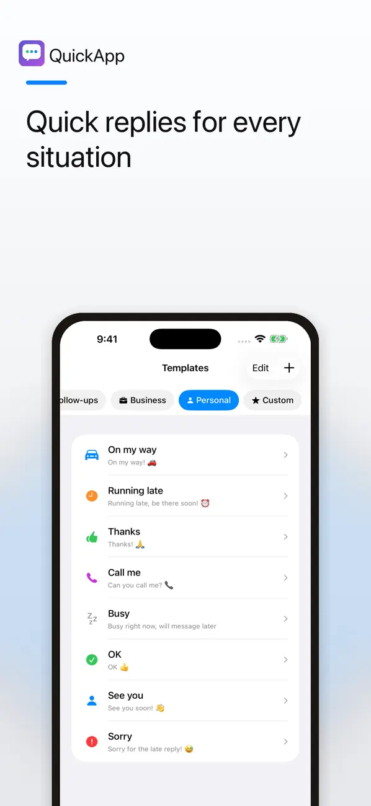
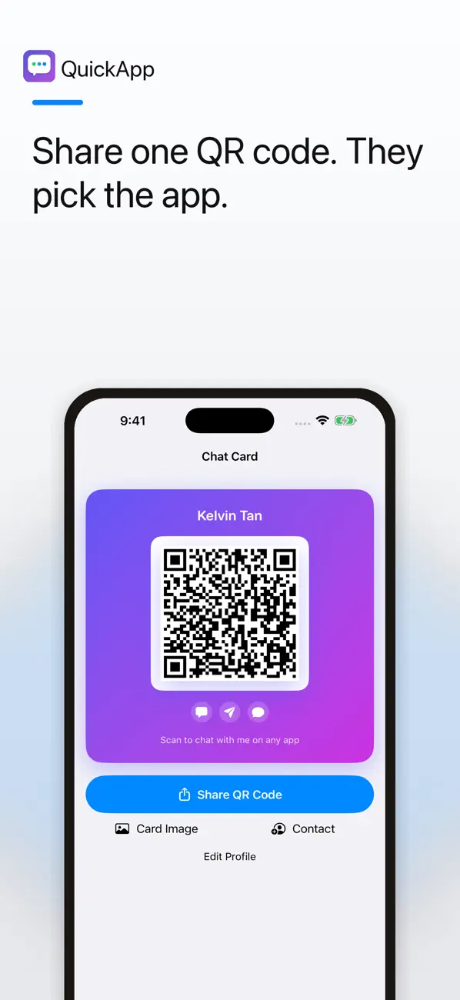

Messaging handoff
Choose where to continue
Open conversations through WhatsApp, Telegram, Viber, Line or SMS. Pick a preferred platform or change it for the current message, depending on what is available on your device.
InstantMessage: No-Save Chat · By Kelvapp
For the seller, delivery driver or number you need once.
Open a chat without saving a new contact. Check the number, choose a supported messaging app and continue the conversation there.

Start the conversation in a supported messaging app, without making a one-off number part of your address book.
Made for everyday use
Arrange a pickup, ask a seller a question or message a service provider without filling your address book with temporary contacts. InstantMessage helps prepare the conversation; your chosen messaging service handles the chat.
Messaging handoff
Open conversations through WhatsApp, Telegram, Viber, Line or SMS. Pick a preferred platform or change it for the current message, depending on what is available on your device.
Templates
Use preset quick replies or create custom templates for common situations. Enable Save Custom Messages if you want a personal library of frequently used messages.
Phone numbers
Choose a country and calling code, set a default and check the full number before continuing. Clipboard detection can offer to paste a copied number.
QR chat cards
Create a personal QR chat card or scan someone else’s. The selected messaging service still needs to be available to the people using it.
Contacts
Find possible duplicates, junk numbers and formatting problems. Review and confirm proposed address-book changes rather than applying them blindly.
Flexible defaults
Keep your usual country and messaging app ready, then override them when a particular conversation calls for something different.
Inside the app
Real screenshots from the current App Store gallery, whose banners still use the earlier QuickApp name. Select an image to see it in full.


A simple place to start
Select the country code and enter or paste the intended recipient’s number. Double-check it before opening a chat.
Choose a supported messaging app and add text or a template. Availability depends on the installed app and the recipient’s account.
Review the recipient and content in the chosen service. Its own sending, privacy and account rules apply.
Use InstantMessage for a one-off chat: check the number, choose a supported service, prepare a clear message and review before sending.
Read the guideFree and paid options
InstantMessage is free to download and includes advertising. Use the app to prepare chats, templates and QR chat cards.
The current US App Store lists “Remove Ads” as an in-app purchase for $19.99.
Prices and available purchases can vary by country and change over time. Review the current local price, entitlements and terms in the app before buying. US App Store information checked 6 November 2026.
A phone number and prepared message are handed to the messaging service you choose. Review that service’s privacy settings as well as the InstantMessage developer policy. Contact cleanup is reviewable and requires your confirmation.
No. It helps you open a conversation through a supported messaging service or SMS; that service handles the conversation.
No. Support depends on the selected service, installed apps and the recipient’s account. Check the destination before sending.
The main chat workflow is designed to work without saving a new contact first.
The current description says nothing is changed until you review and confirm the proposed cleanup.
Check the number, choose the app and continue the conversation.
iPhone · iOS 18.6 or later